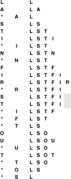
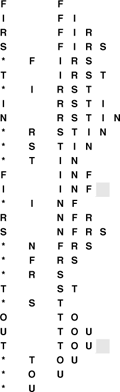
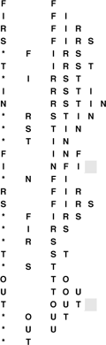

C++ Programming Robert Sedgewick - Princeton University Addison Wesley Professional Algorithms in C++, Parts 1–4: Fundamentals, Data Structure, Sorting, Searching, Third Edition
4.7. Duplicate and Index Items
For many applications, the abstract items that we process are unique, a quality that leads us to consider modifying our idea of how stacks, FIFO queues, and other generalized ADTs should operate. Specifically, in this section, we consider the effect of changing the specifications of stacks, FIFO queues, and generalized queues to disallow duplicate items in the data structure.
For example, our company that maintains a mailing list of customers might want to try to grow the list by performing insert operations from other lists gathered from many sources, but would not want the list to grow for an insert operation that refers to a customer already on the list. We shall see that the same principle applies in a variety of applications. For another example, consider the problem of routing a message through a complex communications network. We might try going through several paths simultaneously in the network, but there is only one message, so any particular node in the network would want to have only one copy in its internal data structures.
One approach to handling this situation is to leave up to the clients the task of ensuring that duplicate items are not presented to the ADT, a task that clients presumably might carry out using some different ADT. But since the purpose of an ADT is to provide clients with clean solutions to applications problems, we might decide that detecting and resolving duplicates is a part of the problem that the ADT should help to solve.
The policy of disallowing duplicate items is a change in the abstraction: the interface, names of the operations, and so forth for such an ADT are the same as those for the corresponding ADT without the policy, but the behavior of the implementation changes in a fundamental way. In general, whenever we modify the specification of an ADT, we get a completely new ADT—one that has completely different properties. This situation also demonstrates the precarious nature of ADT specification: Being sure that clients and implementations adhere to the specifications in an interface is difficult enough, but enforcing a high-level policy such as this one is another matter entirely. Still, we are interested in algorithms that do so because clients can exploit such properties to solve problems in new ways, and implementations can take advantage of such restrictions to provide more efficient solutions.
Figure 4.9 shows how a modified no-duplicates stack ADT would operate for the example corresponding to Figure 4.1 Figure 4.10 shows the effect of the change for FIFO queues.
This sequence shows the result of the same operations as those in Figure 4.1, but for a stack with no duplicate objects allowed. The gray squares mark situations where the stack is left unchanged because the item to be pushed is already on the stack. The number of items on the stack is limited by the number of possible distinct items.

This sequence shows the result of the same operations as those in Figure 4.6, but for a queue with no duplicate objects allowed. The gray squares mark situations where the queue is left unchanged because the item to be put onto the queue is already there.

In general, we have a policy decision to make when a client makes an insert request for an item that is already in the data structure. Should we proceed as though the request never happened, or should we proceed as though the client had performed a remove followed by an insert? This decision affects the order in which items are ultimately processed for ADTs such as stacks and FIFO queues (see Figure 4.11), and the distinction is significant for client programs. For example, the company using such an ADT for a mailing list might prefer to use the new item (perhaps assuming that it has more up-to-date information about the customer), and the switching mechanism using such an ADT might prefer to ignore the new item (perhaps it has already taken steps to send along the message). Furthermore, this policy choice affects the implementations: the forget-the-old-item policy is generally more difficult to implement than the ignore-the-new-item policy, because it requires that we modify the data structure.
This sequence shows the result of the same operations as in Figure 4.10, but using the (more difficult to implement) policy by which we always add a new item at the end of the queue. If there is a duplicate, we remove it.

To implement generalized queues with no duplicate items, we assume that we have an abstract operation for testing item equality, as discussed in Section 4.1. Given such an operation, we still need to be able to determine whether a new item to be inserted is already in the data structure. This general case amounts to implementing the symbol table ADT, so we shall consider it in the context of the implementations given in Chapters 12 through 15.
There is an important special case for which we have a straightforward solution, which is illustrated for the pushdown stack ADT in Program 4.16. This implementation assumes that the items are integers in the range 0 to M–1. Then, it uses a second array, indexed by the item itself, to determine whether that item is in the stack. When we insert item i, we set the ith entry in the second array to 1; when we remove item i, we set the ith entry in the array to 0. Otherwise, we use the same code as before to insert and remove items, with one additional test: Before inserting an item, we can test to see whether it is already in the stack. If it is, we ignore the push. This solution does not depend on whether we use an array or linked-list (or some other) representation for the stack. Implementing an ignore-the-old-item policy involves more work (see Exercise 4.57).
In summary, one way to implement a stack with no duplicates using an ignore-the-new-item policy is to maintain two data structures: the first contains the items in the stack, as before, to keep track of the order in which the items in the stack were inserted; the second is an array that allows us to keep track of which items are in the stack, by using the item as an index. Using an array in this way is a special case of a symbol-table implementation, which is discussed in Section 12.2. We can apply the same technique to any generalized queue ADT, when we know the items to be integers in the range 0 to M–1.
This special case arises frequently. The most important example is when the items in the data structure are themselves array indices, so we refer to such items as index items. Typically, we have a set of M objects, kept in yet another array, that we need to pass through a generalized queue structure as a part of a more complex algorithm. Objects are put on the queue by index and processed when they are removed, and each object is to be processed precisely once. Using array indices in a queue with no duplicates accomplishes this goal directly.
Each of these choices (disallow duplicates, or do not; and use the new item, or do not) leads to a new ADT. The differences may seem minor, but they obviously affect the dynamic behavior of the ADT as seen by client programs, and affect our choice of algorithm and data structure to implement the various operations, so we have no alternative but to treat all the ADTs as different. Furthermore, we have other options to consider: For example, we might wish to modify the interface to inform the client program when it attempts to insert a duplicate item, or to give the client the option whether to ignore the new item or to forget the old one.
When we informally use a term such as pushdown stack, FIFO queue, deque, priority queue, or symbol table, we are potentially referring to a family of ADTs, each with different sets of defined operations and different sets of conventions about the meanings of the operations, each requiring different and, in some cases, more sophisticated implementations to be able to support those operations efficiently.
Exercises |  4.53 Draw a figure corresponding to Figure 4.9 for the stack ADT that disallows duplicates using a forget-the-old-item policy. 4.53 Draw a figure corresponding to Figure 4.9 for the stack ADT that disallows duplicates using a forget-the-old-item policy.
Program 4.16. Stack with index items and no duplicates|
This pushdown-stack implementation assumes that Item has an int cast that returns integers between 0 and maxN-1, so that it can maintain an array t that has a nonzero value corresponding to each item in the stack. The array enables push to test quickly whether its argument is already on the stack, and to take no action if the test succeeds. We use only one bit per entry in t, so we could save space by using characters or bits instead of integers, if desired (see Exercise 12.12).
template <class Item>
class STACK
{
private:
Item *s, *t; int N;
public:
STACK(int maxN)
{
s = new Item[maxN]; N = 0;
t = new Item[maxN];
for (int i = 0; i < maxN; i++) t[i] = 0;
}
int empty() const
{ return N == 0; }
void push(Item item)
{
if (t[item] == 1) return;
s[N++] = item; t[item] = 1;
}
Item pop()
{ t[s[--N]] = 0; return s[N]; }
};
|
| | 4.54 Modify the standard array-based stack implementation in Section 4.4 (Program 4.7) to disallow duplicates with an ignore-the-new-item policy. Use a brute-force approach that involves scanning through the whole stack.
| | 4.55 Modify the standard array-based stack implementation in Section 4.4 (Program 4.7) to disallow duplicates with a forget-the-old-item policy. Use a brute-force approach that involves scanning through, and possibly rearranging, the whole stack.
| | | |  4.56 Do Exercises 4.54 and 4.55 for the linked-list–based stack implementation in Section 4.4 (Program 4.8). 4.56 Do Exercises 4.54 and 4.55 for the linked-list–based stack implementation in Section 4.4 (Program 4.8).
| |  4.57 Develop a pushdown-stack implementation that disallows duplicates, using a forget-the-old-item policy for integer items between 0 and M–1, and that uses constant time for both push and pop. Hint: Use a doubly linked list representation for the stack and keep pointers to nodes, rather than 0–1 values, in an item-indexed array. 4.57 Develop a pushdown-stack implementation that disallows duplicates, using a forget-the-old-item policy for integer items between 0 and M–1, and that uses constant time for both push and pop. Hint: Use a doubly linked list representation for the stack and keep pointers to nodes, rather than 0–1 values, in an item-indexed array.
| | 4.58 Do Exercises 4.54and 4.55 for the FIFO queue ADT.
| | 4.59 Do Exercise 4.56 for the FIFO queue ADT.
| | 4.60 Do Exercise 4.57 for the FIFO queue ADT.
| | 4.61 Do Exercises 4.54and 4.55 for the randomized-queue ADT.
| | 4.62 Write a client program for your ADT from Exercise 4.61, which exercises a randomized queue with no duplicates.
|
|